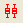
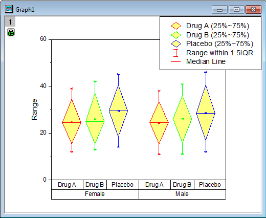
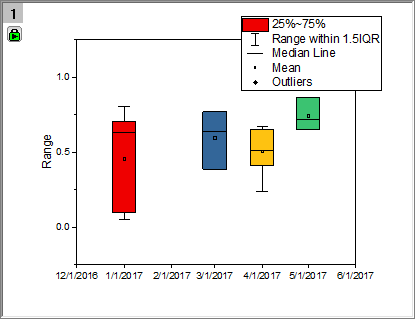

グループ化ボックスチャート(インデックスデータ)
GroupedBoxCharts-IndexedData

必要なデータ
入力データはワークシートの列からである必要があります。また、最低でも1つ、異なるデータ範囲があるグループ化列が必要です。
グラフ作成
データを選択します。
メニューから を選択します。
または、
2D グラフツールバーのグループ化したボックスチャート‐インデックスデータボタンをクリックします。
開くダイアログで、グループ範囲とグラフテーマを選択してグループ化ボックスチャートを作成します。
ボックスチャートの作成とカスタマイズについての詳細はボックスチャートの作成ページをご覧下さい。
plot_gboxindexedダイアログボックス

| データ列
|
この欄は、入力データを指定するのに使用します。
|
| グループ列
|
この項目に表示ボックスと5つのボタン のついたツールバーがあります。 のついたツールバーがあります。
- 表示ボックス
- 選択されたグループ範囲が表示されます。グラフを作図する場合、<なし>以外を選択しなければなりません。このボックスに表示されるデータセットの名前の順番はグループ化するのに使用する順番です。つまり、入力データは最初のデータ範囲でグループ化され、それぞれのサブ範囲が2番目のデータ範囲でグループ化されます。
- 追加ボタン

- このボタンをクリックしてコンテキストメニューから1つの列選択します。あるい列の選択をクリックして列ブラウザを開き、表示ボックスにグループ化する範囲として表示します。最大5つのグループ範囲を追加できます。
- 削除ボタン

- 表示ボックスから選択したデータ範囲を削除します。このボタンはグループ列ボックスで1つ以上のデータ範囲を選択しているときに利用可能です。
- 上へ移動ボタン

- 表示ボックスで選択したデータ範囲を上に移動します。グループ順序を変更できます。
- 下へ移動ボタン

- 表示ボックスで選択したデータ範囲を下に移動します。グループ順序を変更できます。
- すべて選択ボタン

- グループ列のすべてのデータ範囲を選択します。
|
| グラフテンプレート
|
グラフにフォーマットや設定を適用するグラフテンプレートを選択します。デフォルトでは、自動にチェックを入れると組み込みのテンプレートgbox.optuが選択されます。
|
| グラフテーマ
|
グループ化ボックスプロットの組み込みグラフテーマをリストから選択します。
|
| データポイントの色
|
グラフテーマがデータポイントの表示 (Box_Column_Scatter など) をサポートしている場合は、データポイントを列の値で色分けするためのデータポイントの色を追加します。オプション
|
| 出力データ
|
計算したデータの出力先を指定します。
|
さらに、このダイアログでは作成されるグラフをプレビュー出来ます。
Note：このダイアログの再計算オプションはデフォルトで自動になっています。
| Note: 選択したグループ列が200を超えるグループを作成すると、plot_gboxindexedダイアログに、計算が遅くなることを警告するメッセージが表示され、計算を続行する必要があることを確認します(グラフのプレビューも無効になります)。この200グループのしきい値は、LabTalkシステム変数@NCの値を変更することによって変更されます。
|
サンプル 1

|
- 新しいワークブックを作成します。
 ボタンをクリックして<Origin EXE folder>\Samples\Graphing\ にあるCategorical Data.dat をインポートします。 ボタンをクリックして<Origin EXE folder>\Samples\Graphing\ にあるCategorical Data.dat をインポートします。- C, D列を選択し、列メニューからカテゴリーとして設定を選択します。
- カテゴリー行の「ソートなし」をダブルクリックしてカテゴリーダイアログ（カテゴリタブと同じ）を開き、列Cと列Dを昇順でソートします。
- 列Bを選択して、メニューから作図: カテゴリカル: グループボックスチャート‐インデックスデータと操作し、plot_gboxindexedダイアログを開きます。
- グループ列のセクションで、右上にある三角形のボタンをクリックして列CとDを順に選択します。
- グラフテーマとしてBox_Filled Diamond を選択します。既にグラフテンプレートを保存していて、グラフに使用したい場合、自動のチェックを外し ...ボタンをクリックしてグラフテンプレートオプションでテンプレートを参照・選択することができます。
- 出力データを＜新規＞にして、算出されたデータが新しいワークシートに出力されるようにします。
- OK をクリックして、グラフを作成します。
- 
|
サンプル 2
|
|
この短いチュートリアルでは、グループボックスチャート-インデックスデータをプロットし、日付 - 時間データを使ってグループを定義する方法を説明します。
- まず、このチュートリアルの下にあるxとyのデータを選択してコピーします。選択項目にヘッダー行情報の日付と値を含めます。
- 新しいブックを開き、コピーしたデータをSheet1の最初のセルに貼り付けます。
- ワークシートの最初のデータ行を右クリックし、ロングネームに設定すると、テキストがロングネームの列ラベル行に移動します。ワークシートはこのようになります。
- 列Aのデータは日付データのように見えますが、既定では列の書式を設定するまでテキストとして扱われます。列Aをハイライト表示し、右クリックして列フォーマットを選択します。プロパティタブをクリックし、オプションでフォーマットを日付に設定し、表示をMM /dd/yyyy（8/2/2018など、ドロップダウンリストの最初のオプション）に設定し、OKをクリックします。これにより、日付データが右揃えになり、Originはそれを数値データとして認識します。
- 列Bをハイライト表示し、プロット> 2D：グループプロット：グループ化されたボックスチャート - インデックスをクリックします。n plot_gboxindexedダイアログボックスで、グループ列コントロールの右側にある矢印をクリックし、A（X）：Datesを選択して、OKをクリックします。
- 軸目盛ラベルをダブルクリックして、X軸ダイアログボックスを開きます。スケールタブで、日付範囲を12/1/2016 00:00:00.000から6/1/2017 00:00:00.000に設定します。主目盛の値の横に1monthと入力します。
- 目盛りタブをクリックし、フォーマットサブタブで位置合わせを中央に設定してOKをクリックします。グラフは次のようになります。
- 
- 日付データは実際のスケールに均等にプロットされるので、2/1/2017の目盛りはプロットされないことに注意してください。
|
| 日付
|
値
|
| 1/1/2017
|
0.63336
|
| 1/1/2017
|
0.09768
|
| 1/1/2017
|
0.04968
|
| 1/1/2017
|
0.70547
|
| 1/1/2017
|
0.80247
|
| 3/1/2017
|
0.76977
|
| 3/1/2017
|
0.64009
|
| 3/1/2017
|
0.38742
|
| 4/1/2017
|
0.67097
|
| 4/1/2017
|
0.6313
|
| 4/1/2017
|
0.40885
|
| 4/1/2017
|
0.50818
|
| 4/1/2017
|
0.23556
|
| 4/1/2017
|
0.64873
|
| 4/1/2017
|
0.45731
|
| 5/1/2017
|
0.86434
|
| 5/1/2017
|
0.65003
|
| 5/1/2017
|
0.71796
|
テンプレート
gBox.otp (Originの実行フォルダ内にインストール)
Notes
- 1つ以上のグループ化範囲がある場合、X 軸目盛ラベルはデフォルトで表のように表示されます。表示に関してのフォーマットは軸ダイアログの目盛ラベルページにある表ツリーノードから変更できます。
- デフォルトでサブグループはグループ範囲の計算を元にオンになります。このサブグループ間あるいは内での間隔は棒の間隔タブでそれぞれ制御できます。
- ボックスチャートの内容に適した凡例は作成/編集できます。これには、ボックスチャートがアクティブな状態でグラフ操作:凡例：ボックスチャートの内容とメニューから操作します。
- また、素データからグループ化ボックスチャートを作成する事も可能です。
- グラフテーマとしてBox_Column Scatterを選択すると、グループ化した列の散布図を作図できます。
- グラフテーマとして、Box_Connect Mean Lineを選択すると、平均値接続線付きのグループ化ボックスチャートを作成できます。
- グラフテーマとしてBox_Interval Plotを選択すると、グループ化したインターバルグラフを作図できます。
- グラフテーマとしてBox_Mean Bar with SEを選択すると、SEエラーバー付き統計棒グラフを作成できます。